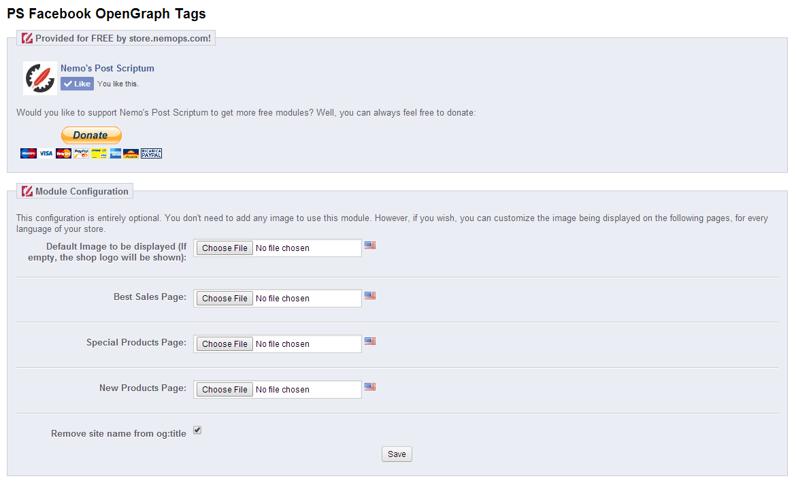

Facebook Open Graph Module for Prestashop
By Nemo
http://nemops.com
http://store.nemops.com
Installation
- Copy the “psograph” folder into the modules folder of your website, or upload it from the modules page.
- Go ahead and install the module from the SEO Tab in back office’s modules section
Configuration

The Module's configuration is entirely optional, as you can simply install it and leave it alone. However, if you want you can upload a specific image to be used in the following pages, instead of the site's logo:
- Index (applied to all pages without specific image)
- Special Prices
- New Products
- Best Sellers
You will be able to choose one image for each language of your store, to better target your audience with tailored ads
Lastly, you can choose if to take of or leave the website's name in the Product's Title for the Open Graph Tag